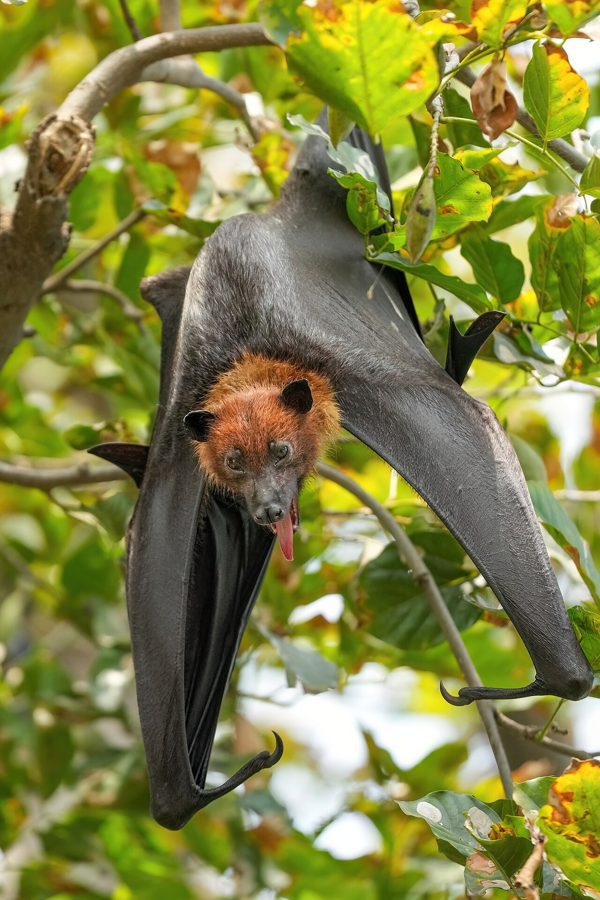

बड़ा चमगादड़Indian Flying Fox
Pteropus medius · Pteropodidae · MAM-0001

- Scientific name
- Pteropus medius Temminck, 1825
- Family
- Pteropodidae
- Hindi
- बड़ा चमगादड़ / फल चमगादड़
- Status here
- native
- IUCN
- LC
When to look कब देखें
Present all year.
Indian Flying Fox / Greater Indian Fruit Bat
Pteropus medius Temminck, 1825 — Pteropodidae
बड़ा चमगादड़ — पूर्वी उत्तर प्रदेश के हर बड़े गाँव में पीपल, बरगद, इमली या आम के बड़े पेड़ों पर सैकड़ों की संख्या में उल्टे लटका मिलता है। शाम होते ही उड़ने लगता है — एक रात में 20-40 किलोमीटर तक। यह भारत का सबसे बड़ा चमगादड़ है, पीपल और बरगद के बीज लंबी दूरी तक ले जाता है। इन्हीं के कारण ये पेड़ हमारे क्षेत्र में फैले हुए हैं।
Quick Identification त्वरित पहचान
| Feature | Description |
|---|---|
| Size | Wingspan 1.2–1.5 m; body 20–25 cm; weight 600–1600 g |
| Face | Fox-like — pointed snout, large forward-facing eyes, small ears |
| Mantle | Bright orange to rusty-yellow fur around neck and shoulders — diagnostic |
| Wings | Dark brown to black, leathery; held wrapped around body when hanging |
| Activity | Leaves roost at dusk; returns at dawn; loud screeching at roost |
| Roost | Colonial — hundreds to thousands hanging upside down by day |
| Flight | No echolocation clicks; navigates by vision and smell |
Field tip: A bat-shaped silhouette streaming out of a large village tree at sunset with a wingspan as big as a kite — is Indian Flying Fox. Nothing else in eastern UP comes close in size.
Morphology आकारिकी
| Feature | Measurement |
|---|---|
| Body length | 20–25 cm |
| Wingspan | 120–150 cm |
| Weight | 600–1600 g (males larger) |
| Forearm length | 150–180 mm |
Head: Fox-like — pointed muzzle, large eyes, prominent but relatively small ears. Two well-developed canine teeth visible.
Eyes: Large, forward-facing, adapted for low-light vision. Pupil round (cf. typical bats, which often have narrow pupils).
Pelage: Short, dense fur. Back dark brown to black. Mantle (around neck and shoulders) bright orange to deep rust-yellow — most striking field character. Belly variable, often paler brown.
Wings: Dark brown to black wing membranes (patagium) stretched between elongated finger bones, body, and hind legs. Thumb claws are functional and used for climbing.
Hind feet: Strong claws on toes used to hang upside down for hours without muscular effort (a tendon-lock mechanism — the bat does not have to "grip" actively).
No tail (unlike many microbat species). Sex differences: males slightly larger and often with brighter mantle.
Vision and Smell — Not Echolocation दृष्टि और गंध, गूँज नहीं
This is the single most surprising fact about flying foxes: megabats do not use echolocation. Most bats people know — the small house bats darting around streetlights — use rapid clicking calls to bounce sound off insects and walls. The flying fox does not. It navigates by vision and smell, like a bird.
The eyes are large, forward-facing, and adapted for low-light conditions. Flying foxes can fly safely at dusk and into early night using twilight and starlight. They can also identify ripe fruit by colour at considerable distances.
Smell is equally important. A flying fox can locate a single ripe fig fruit from hundreds of metres away. Fig trees in fruit attract bats from across the landscape — sometimes the entire local population converging on one tree in a single night.
The one bat genus that did re-evolve echolocation among the fruit bats is Rousettus — and it does so with tongue-clicks, not larynx clicks. Flying foxes (Pteropus) do not echolocate.
Ecological Role पारिस्थितिक भूमिका
Keystone seed disperser — possibly the single most important seed-mover in the eastern UP landscape for large-fruited tree species. Without flying foxes, species like Ficus religiosa (peepal), F. benghalensis (banyan), tamarind, mahua, and many wild figs would have severely reduced regeneration over distances beyond a few hundred metres.
Long-distance disperser — each bat may fly 20–40 km per night between roost and feeding tree. Seeds in droppings or regurgitated pellets are deposited across this entire range. This is the landscape connectivity flying foxes provide that smaller frugivores cannot match.
Pollen transfer — silk cotton (Bombax ceiba), mahua (Madhuca longifolia), and some Bombacaceae depend on flying-fox pollination. Faces and shoulders dust with pollen as bats feed on large night-opening flowers.
Colonial roost as ecosystem node — a roost tree of hundreds of bats receives massive guano input, sustains its own insect community (flies, beetles), and is itself a feeding ground for raptors and crows on weak or dead bats.
Life Cycle / Phenology जीवन चक्र
| Month | Event |
|---|---|
| Jul–Oct | Mating — males defend branch territories in roost |
| Jul–Nov | Peak births; pup clings to mother during feeding flights |
| Year-round | Nocturnal foraging; diurnal roosting |
| Dec–Feb | Reduced pup activity; adults continue year-round |
Roosting: Hangs upside down by hind claws from horizontal branches of large trees. Wings wrapped around body in cool weather, held loose in heat. Roost trees used for years to decades — traditional, learned locations.
Reproduction: Single pup per year (rarely twins). Gestation ~5–6 months. Pup clings to mother for the first ~6 weeks; mother carries pup on her belly during feeding flights. Weaning at ~5 months. Sexual maturity: ~18 months. Lifespan: 15–20 years in wild; up to 30 in captivity.
Food Plants भोजन के पौधे
| Plant | Hindi | Part eaten | Notes |
|---|---|---|---|
| Peepal (Ficus religiosa) | पीपल | Figs | Primary year-round food; key dispersal partner |
| Banyan (Ficus benghalensis) | बरगद | Figs | Major fig source |
| Cluster fig (Ficus racemosa) | गूलर | Figs | Trunk-borne figs, easily reached |
| Mango (Mangifera indica) | आम | Ripe fruit | Major seasonal food; conflict with orchards |
| Guava (Psidium guajava) | अमरूद | Ripe fruit | Garden conflict |
| Tamarind (Tamarindus indica) | इमली | Pulp, flowers | Major roost tree + food |
| Neem (Azadirachta indica) | नीम | Fruits | Common village food |
| Silk cotton (Bombax ceiba) | सेमल | Flowers and nectar | Key pollinator |
| Mahua (Madhuca longifolia) | महुआ | Flowers | Pollinator |
Agricultural / Human Relevance कृषि एवं मानव उपयोग
Beneficial roles: Long-distance seed dispersal of village and orchard trees (peepal, banyan, mango, tamarind, mahua all benefit); pollination of silk cotton and mahua; guano under roost trees is a natural fertilizer; indicator species — healthy roost colonies indicate intact landscape-scale tree connectivity.
Real conflicts: Mango and guava orchards near roost trees may suffer significant fruit damage — a real economic conflict. Roost noise and droppings under colonial trees can be a nuisance to people living nearby.
Myths and false beliefs: Flying foxes are reservoir hosts for Nipah virus, but transmission to humans is extremely rare and requires very specific conditions (e.g., drinking fresh date palm sap contaminated by bat saliva). Eastern UP is not a high-risk Nipah area. Casual proximity to flying foxes — seeing them, walking under their roost — carries effectively zero risk. Flying foxes eat only fruit; they never bite people unless physically grabbed.
Conservation threats: Roost-tree felling is the single biggest threat. Traditional roost trees are large, slow-growing peepals, banyans, and tamarinds. Power-line collisions at dusk, direct killing after Nipah scares, and pesticide poisoning through contaminated fruit are additional threats.
Expected Locally स्थानीय रूप से अपेक्षित
Not a field record. Written from published accounts for eastern Uttar Pradesh. No confirmed local sighting yet — if you have seen it, that is what the atlas needs.
अभी तक स्थानीय पुष्टि नहीं। यह विवरण प्रकाशित स्रोतों से है, किसी अवलोकन से नहीं।
In Basti district, large flying fox roosts have been observed in mature peepal and banyan trees in village centres and temple grounds. Colonies of several hundred individuals are present at established roost trees. Dusk departures can be spectacular — long streams of bats leaving a roost tree over 30–45 minutes starting just after sunset. Farmers near mango orchards sometimes report fruit damage during ripening season (May–June). There are local beliefs linking flying foxes with bad omens, which occasionally lead to persecution of roost trees.
Distribution वितरण
Global range: Indian subcontinent — India, Pakistan, Bangladesh, Sri Lanka, Myanmar, and southern Nepal. The species was recently re-described as Pteropus medius Temminck, 1825 (replacing the long-used P. giganteus for the Indian subcontinent populations following taxonomic revision in 2012).
In India: Widespread across all warm regions of the country, from the Himalayan foothills to the tip of the peninsula and the Andaman & Nicobar Islands. Absent from true arid zones (Thar desert core).
In Uttar Pradesh: Distributed throughout the state wherever large roost trees (peepal, banyan, tamarind, mango) are present. More common in the better-wooded eastern districts and the Terai fringe.
In Basti district / eastern UP: Present year-round wherever mature roost trees stand. Dense village-grove colonies are the most commonly observed; foraging bats are also visible over water bodies and orchards at dusk.
Research Questions शोध प्रश्न
- Where are the active flying-fox roosts in your village or area? — Identify and map every roost tree; note species and approximate colony size.
- How many bats leave the roost at dusk? — Count departures during the first 30 minutes after sunset; repeat across months to track seasonal change.
- Which trees do bats feed on locally? — Walk known fruit trees (peepal, banyan, mango, tamarind, neem) at dusk during fruiting season and record bat presence.
- Has the local roost-tree population changed in your lifetime? — Ask elders which roost trees existed 40–50 years ago that no longer exist, and what was felled.
- What do local people believe about flying foxes? — Ask 10 people whether they fear bats, believe bats cause disease, consider bats crop pests, or value bats; record beliefs as baseline data for conservation communication.
Similar Species मिलती-जुलती प्रजातियाँ
| Species | How to distinguish |
|---|---|
| Cynopterus sphinx (Lesser Indian Fruit Bat) | Much smaller (wingspan ~40 cm); roosts under leaves singly or in small groups; brown without bright mantle |
| Microbats (Pipistrelle, Mouse-tailed Bat) | Tiny (palm-sized or smaller); use echolocation; roost in roofs, caves, crevices; insectivorous; fluttering flight |
| Owls (Barn Owl, Spotted Owlet) | Feathered; head can rotate; silent flight; vertical sitting posture, not hanging |
| Black Kite (in silhouette at dusk) | Soaring flight, no flapping; tail forked; daytime hunter, not dusk-only |
Taxonomy & Classification वर्गीकरण
Original description. Pteropus medius was described by Coenraad Jacob Temminck in 1825 in Monographies de Mammalogie, Vol. 1, page 177. Type locality: India. For most of the 20th century, the Indian Flying Fox was referred to as Pteropus giganteus (Brünnich, 1782), but taxonomic revision by Mlíkovský (2012) established that giganteus correctly applies to a different population and that the Indian subcontinent animals are correctly named P. medius Temminck, 1825.
Subspecies. Several subspecies have been described, with regional variation in size and mantle colour. The nominate subspecies Pteropus medius medius Temminck, 1825 occurs through most of India including Uttar Pradesh. Pteropus medius ariel (Doubtful validity) from Sri Lanka and Pteropus medius gangeticus from northeast India are sometimes recognised, but subspecific taxonomy remains under revision.
Family and order placement. Belongs to the order Chiroptera (bats), suborder Yinpterochiroptera, family Pteropodidae (Old World fruit bats), genus Pteropus (flying foxes). The family Pteropodidae contains approximately 200 species of fruit bats across Africa, Asia, and Australia. The genus Pteropus is the largest in the family, with approximately 65 species — all characterised by the fox-like face, large eyes, and absence of echolocation (with the exception of Rousettus which has re-evolved it separately).
Phylogenetic notes. Molecular phylogenetics places Pteropus within a monophyletic Old World megabat clade. Pteropus medius is most closely related to other South Asian flying foxes. Despite their size, flying foxes are not closely related to microbats — recent molecular work (Teeling et al. 2005) suggests that bats are monophyletic (all bats share a common ancestor) and echolocation may have evolved independently multiple times.
IUCN status rationale. Assessed as Least Concern (LC) on the IUCN Red List (Tsang, 2020) — widespread, adaptable to human-modified landscapes, and present in large numbers. However, populations are decreasing due to roost-tree loss and direct persecution. Not currently threatened but warrants monitoring.
Photo Gallery फोटो गैलरी
Atlas Connections संबंधित प्रजातियाँ
- FLR-0006 Peepal — primary roost tree + obligate seed-dispersal partner; the most important plant-mammal mutualism in the atlas
- FLR-0021 Mahua — pollination partner; mahua flower feeding
- FLR-0011 Mango — seasonal food and conflict species; mango fruit eaten by bats
- SFL-0001 Termite — occasionally takes large alates during dusk emergence
- BRD-0011 Black Kite — opportunistic predator of weakened bats below roost trees
References संदर्भ
- Temminck, C.J. (1825). Monographies de Mammalogie, Vol. 1. G. Dufour et E. d'Ocagne, Paris.
- Mlíkovský, J. (2012). Correct name for the Indian flying fox (Pteropodidae). Vespertilio, 16: 203–204.
- Bates, P.J.J. & Harrison, D.L. (1997). Bats of the Indian Subcontinent. Harrison Zoological Museum Publications, Sevenoaks, Kent.
- Prater, S.H. (1971). The Book of Indian Animals. 3rd edition. Bombay Natural History Society / Oxford University Press.
- Tsang, S.M. (2020). Pteropus medius. The IUCN Red List of Threatened Species 2020: e.T18746A22078665.
- Mickleburgh, S.P., Hutson, A.M. & Racey, P.A. (2002). A review of the global conservation status of bats. Oryx, 36(1): 18–34.
- Plowright, R.K. et al. (2015). Ecological dynamics of emerging bat virus spillover. Proceedings of the Royal Society B, 282(1798): 20142124.
- GBIF Occurrence Data — Pteropus medius, India (2026). GBIF taxon key: 2433303.
Source file: species/fauna/mammals/indian_flying_fox.md